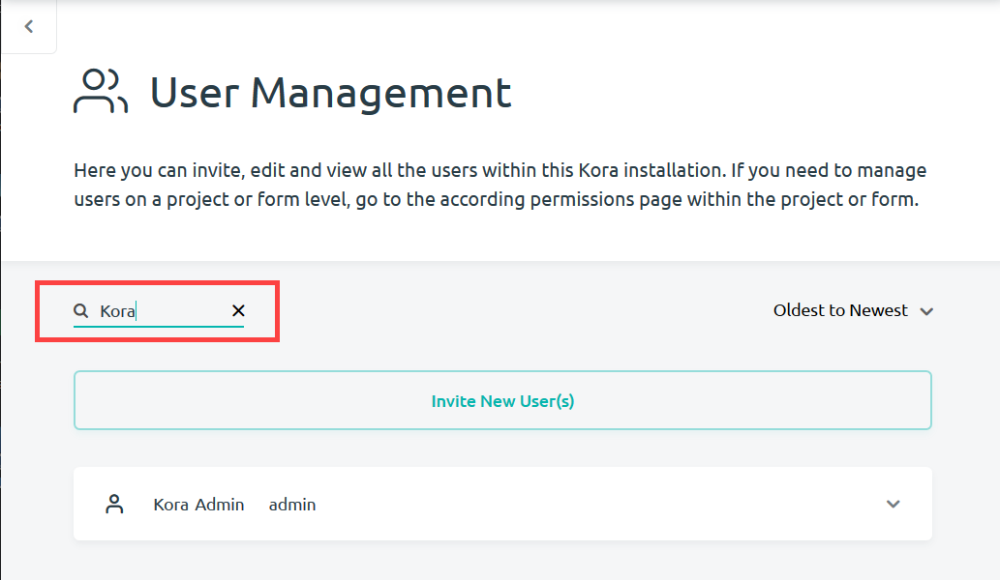

Managing Users in a Kora installation
Kora makes it easy for administrators to manage who is part of a Kora installation. This includes the ability to invite, edit and view users. Follow these steps to get to the User Management page.
-
Management of users can start from anywhere in kora by going to the main navigation menu at the top right of the page.

-
Select the Management option at the bottom of the page.

-
After opening up the Management submenu, select User Management to bring you to the page for user management.

-
You may search for users by using the Find a User search bar.

-
You may also organize your users alphabetically or by the date they joined your Kora installation.

Inviting New Users to a Kora installation
Any number of new users can be added to the Kora installation. All that is required for new users is a valid email address to sign up for a new user account. Follow these steps from the User Management page to add a new user to your Kora Installation:
-
Select the Invite New User(s) button at the top of the page.
-
An Invite User(s) pop-up will appear. Enter any number of emails for your users into the Enter Email(s) to Invite User(s) field. Emails must be separated by either a space or a comma.
-
You have the option to include a personal message with your invite.
-
Click Invite User(s) at the bottom of the pop-up.
New users will receive an email invitation to join Kora. For directions on how to sign up for a new user account, check out the new user account documentation.
Managing Permissions
You may give a user administrative access by checking the box next to Admin. Administrators are able to give or take admin access to other users within your Kora installation. Admins will have the ability to manage users, create projects, manage API tokens, and perform other high level actions. Care should be taken with who is given administrative action since they will have a lot of power to change the organization of data within a Kora installation.
You are also able to mark users as active or inactive. Active users will be able to login and work on your Kora installation, while inactive users will no longer be able to sign into their Kora accounts.
Viewing User Profiles
Administrators are able to view the profiles of any user within a Kora installation by selecting View User Profile. Administrators are able to view the same account information that users can view of themselves. This includes their profile information, permissions and record history.
Editing User Profiles
As an administrator, you have the ability to update any user's profile information by selecting Edit User Profile for a user. This allows you to edit the same profile information as a user editing their own account. This includes their username, email and password.